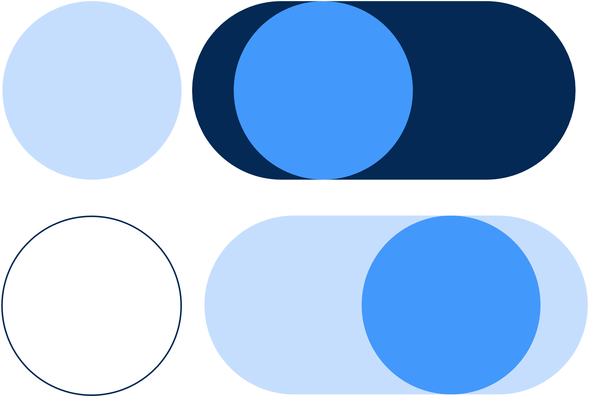

Contributing to open source projects from SAS Institute Inc.
SAS is the founder and future of analytics.
When you contribute to SAS's open source projects, you'll build tools that help people make better decisions, faster.
Just follow these steps to get started.
SAS Software on GitHub is home to more than 150 open source projects from SAS. Find open projects, plugins, examples, and other resources for extending and integrating SAS's powerful tools with open source languages and frameworks.
Browse projects Search projects →If a SAS open source project is accepting contributions, the project repository will contain a CONTRIBUTING.md file. Read that file carefully. It will contain important instructions for contributing to the project. It might also offer details about the project's development and code review processes.
When you understand (and follow) these guidelines, you'll increase the likelihood that project maintainers will accept your contributions.
See exampleEveryone contributing to SAS projects must sign SAS's standard contributor agreement, which is built on the Developer Certificate of Origin. Complying with the agreement does not alter your right to use your contributions for any other purpose.
Version 1.2
To contribute to this project, you must (1) attest to your right to offer your contribution and (2) clearly indicate whether you used artificial intelligence tools to develop your contribution.
Read the full agreementTo comply with the agreement and attest to your right to offer your contribution to a SAS project, simply add the following line to your commits:
Signed-off-by: Firstname Lastname <user@domain>For example:
Signed-off-by: Random J. Developer <random@developer.example.org>You can add this line to your commits with this command:
git commit -sSAS uses the DCO app to scan all commits in incoming pull requests and confirm this sign-off. The app will alert you if your commits aren't properly signed-off. It will also offer instructions for remediating the issue and providing proper sign-off. SAS project maintainers won't merge your commit unless you've added proper sign-off.
We also ask that you indicate when your contribution contains code an AI assistant helped you generate.
If a coding assistant generated your entire contribution, please add the following additional line to your committ message:
Generated-by: Assistant NameFor example:
Generated-by: Claude CodeIf you collaborated with a coding assistant to create your contribution, add the following line to your commit message:
Assisted-by: Assistant NameFor example:
Assisted-by: GitHub CopilotBy including these notes in your contirbutions, you're helping SAS advance responsible innovation.
The time has come. Submit your pull request so we can take a look.
A project's CONTRIBUTING.md file will detail the project's code review processes. All contributions require review from SAS project maintainers. They may run unit tests, development tests, integrations tests, and security scans using internal SAS infrastructure. In this case, they may not merge a contribution directly from GitHub; instead, they'll work with submissions internally first, vetting them to ensure they meet SAS standards.
Each of SAS's open source projects has its own team of maintainers at SAS. Each one therefore has its own set of code conventions and review process, too.
Need help? Just ask.
We’ll always do our best to work with contributors in public issues and pull requests; however, to ensure our code meets our internal compliance standards, we may need to incorporate your submission into a solution we push ourselves. And we work to ensure all contributors receive appropriate recognition for their contributions—at the very least, by acknowledging contributors in our release notes.
Browse the SAS Software organization on GitHub.